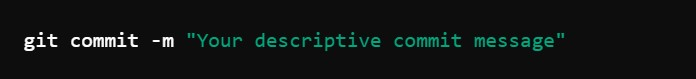

Everyday Git
What is Git?
Git is a distributed version control system (VCS) that helps developers manage their code efficiently, allowing teams to collaborate on projects without overriding one another's work. Created by Linus Torvalds in 2005, Git is now one of the most widely used version control tools in the world, and it is particularly valued for its speed, flexibility, and powerful branching capabilities.
What is a version control system?
A version control system is a tool that records changes made to files, allowing you to track modifications over time. This system enables multiple developers to work on the same codebase concurrently while keeping a detailed history of changes. It also allows you to revert to previous versions if something goes wrong, compare changes, and understand the contributions of each team member.
Here is how a VCS works in practice
- Version tracking: As changes are made to files, a version control system stores these updates as a series of snapshots.
- Collaboration:Multiple people can work on a project simultaneously, merging changes together, and resolving conflicts when they arise.
- Branching: You can create branches to test new features or changes without affecting the main codebase. Once you are satisfied with the changes, they can be merged back into the primary branch.
Other version control systems
- Subversion (SVN): A centralized VCS where all changes are made in a single, central repository.
- Mercurial:Another distributed VCS similar to Git, but with a simpler design and ease of use.
- Perforce:A centralized VCS used mostly in large enterprise environments for handling huge codebases.
- CVS (Concurrent Versions System):An older version control system, now largely obsolete, but still in use in some legacy projects.
In this blog, we will be diving deep into Git and its seamless integration with GitHub, a platform built for hosting Git repositories and facilitating collaboration across the globe.
Installation and Setup of Git
Check if Git is installed
The first step is to check whether Git is installed on your machine. Follow the steps below depending on your operating system.
- For Windows/Mac/Linux:
- Open a terminal or command prompt:
- Windows:Open "Command Prompt" or "Git Bash."
- Mac:Open "Terminal."
- Linux:Open your default terminal.
- Run the following command to check if Git is installed:
If Git is installed, you should see an output of the version:
Configuring Git
Once Git is installed, it is important to configure your identity, which Git uses to record who made changes to the repository. This involves setting your username and email address. This information will be associated with every Git commit you make and is required for proper version control.
Steps to Configure Git Username and Email:
- Open your terminal or Git Bash (on Windows, you can use either Command Prompt).
- Set your username by running the following command:
- Set your email address by running the following command:
- Verify your configuration by running:
For example if my username is "Namalwa" you will enter as follows:
For example if your email is namalwanina.com you will enter as follows:
You should see something like:
Email adress
Intializing a Git repository
A Git repository is a storage space that tracks all the changes you make to your project files. It stores all your project files, along with the history of every change made to those files, making it easier to collaborate, manage versions, and revert to previous states if necessary. Git repositories can be local (on your machine) or remote (on services like GitHub).
How to Initialize a Git Repository
When you initialize a Git repository, you are essentially telling Git to start tracking changes in a specific folder or project.
Steps to Initialize a Git Repository:
- Open your terminal or Git Bash.
- Navigate to the project folder where you want to create a repository. You can do this by using the cd command:
- Initialize the repository by running the following command:

This command creates a hidden .git directory in the folder, where Git stores all the information it needs to track changes in your project.
What happens after initialization
- A .git folder will be created inside your project folder. This folder contains all the metadata that Git uses to track the project’s history.
- Your project is now a Git repository, but it’s not tracking any files yet. To start tracking files, yo will need to add and commit them (explained in later steps).
Verify Your Repository Initialization
After running the git init command, you can check if Git is correctly initialized by running:
If the repository is initialized, you’ll see a message like:

Adding files to the staging area
The staging area (also known as the "index") in Git is an intermediate space where you prepare changes before committing them to the repository. It’s like a rough draft that allows you to review what will be committed. Files in the staging area are tracked by Git but not yet part of the permanent project history.
Understanding Tracked vs Untracked Files
- Tracked Files:These are files that are being monitored by Git. Any changes you make to tracked files can be added to the staging area and eventually committed.
- Untracked Files:These are files that Git isn’t yet aware of. If you create new files in your project directory, they are untracked by default until you explicitly add them to the repository.
Steps to Add Files to the Staging Area
- Open your terminal or Git Bash and navigate to your project directory.
- Check the status of your repository by running:
- Add files to the staging area:
Git will display a list of untracked files and any changes made to tracked files.
To start tracking untracked files, or to add changes made to tracked files to the staging area, use the git add command:
Example:
This command moves the file newfile.txt from untracked to tracked and stages it for commit.
Staging Multiple Files
Add all files (tracked and untracked) to the staging area by using:

The period (.) tells Git to add all changes in the current directory to the staging area.
Verify Staged Files
After adding files, you can check which files are in the staging area by running "git status"
Now, your files will be shown as staged for commit, with a message like:
Committing changes
After adding files to the staging area, the next step is to commit these changes to the Git repository. A commit represents a snapshot of your project at a specific point in time. It’s like a "save" in a video game, where Git stores the current state of your files.
Steps to Commit Changes
- Ensure your files are staged by running "git status"
- Commit your changes using the following command: 
- The -m option allows you to provide a commit message.
- A good commit message should be concise but descriptive, explaining what changes were made and why.
You should see the changes that are staged for commit.
Example:
How to Write Good Commit Messages
A well-written commit message helps others (and your future self) understand why a change was made. Follow these guidelines for good commit messages:
- Use the imperative mood (as if you’re giving a command). For example:
- Bad: "Fixed a bug in the login feature"
- Good: "Fix bug in login feature"
- Keep the message short but descriptive. Aim for under 50 characters in the subject line. If necessary, you can add a more detailed description after the first line.
- Explain the why, not just the what. Focus on the reason for the change, not just the code you wrote.
- Examples of good commit messages:
- "Add validation to user registration form"
- "Fix broken link in homepage footer"
- "Refactor database connection code for performance"
Viewing Past Commits
Git allows you to view the history of all commits made in a repository. This is useful for tracking changes and understanding the evolution of your project.
- To view the commit history, run:
This command displays a list of all past commits, including the commit hash (unique ID), author, date, and commit message.
Going Back to a Specific Commit
Sometimes, you may want to revert your project to an earlier state based on a specific commit. You can do this using the commit hash from the git log command.
How to Reset to a Specific Commit
To go back to a specific commit (in your working directory), use:
Replace
Example:git checkout f3b12d3400a17f8dba7d29ec8a1a3c78a91a1a7e
Returning to the Latest Commit
If you want to go back to the latest commit after viewing or testing an older commit, you can switch back to your branch:
Branches in Git
A branch in Git is essentially a separate version of the code that allows you to work on different features or fixes in isolation. Every Git repository starts with a default branch called master (or main in newer Git versions), which represents the primary version of the project. However, branches allow you to create independent environments to work on new features, bug fixes, or experimental ideas without affecting the main codebase.
Why Are Branches Important?
- Isolated Development: Branches allow developers to work on new features or fixes without disrupting the stable codebase. This means that even if your code is incomplete or buggy, it won’t interfere with the main project until you're ready to merge it.
- Collaboration: In teams, multiple people can work on different branches simultaneously. For instance, one developer might work on a new feature while another fixes a bug, and each can do so in their own branch.
- Safe Experimentation: Branches provide a safe environment to try out new ideas or make major changes. If something goes wrong, it’s easy to discard the branch without affecting the main project.
- Version Control: Branches allow teams to maintain different versions of the project. For example, a branch for the current release can be kept separate from a branch where new features are being developed for the next release.
How Branches Work in Git
A branch is essentially a pointer to a specific commit in Git's history. As you make new commits on a branch, Git advances the pointer to reflect the latest state of your project.
By default, you're on the master or main branch when you start a project, but you can create as many branches as you need to organize your workflow.
Common Use Cases for Branches
- Feature Branches: When you’re working on a new feature, you can create a branch dedicated to that feature. This allows you to develop, test, and make commits without impacting the stable code on the master branch.
- Bug Fixes: You can create a branch specifically for fixing bugs. Once the bug is fixed and tested, you can merge the changes back into the main branch.
- Hotfixes: Sometimes urgent changes need to be made to the live version of a project. You can create a branch for the hotfix, apply the fix, and merge it back quickly without disrupting other ongoing work.
Creating a branch
In Git, creating a new branch is an essential step when you want to work on a feature, fix a bug, or experiment with changes without affecting the main codebase. Creating branches allows you to isolate your work and ensure the stability of your project until your work is complete and ready to be merged.
Viewing branches
Use the command git branch to view your existing branches. The active branch will have a little asterisk symbol (*) beside it and in some command line interfaces will be green in color.
Viewing all branches
To create a branch, we use the command:
Replace BRANCH_NAME with your preferred branch name, for example, if we want to create a branch called chapter1:"git branch chapter1"
This will simply create a branch but will not switch to it. We can prove this by running the git branch command:
We see that we now have two branches, chapter1 and master but master is the active one since it is the one with the asterisk symbol beside it.
Switching active branches
Switching branches means changing the active branch. To switch branches, we use the command:"git switch BRANCH_NAME"
Replace BRANCH_NAME with the name of the branch, for example, if we want to make chapter1 the active branch (switching to it):"git switch chapter1"
This will change the active branch from master to chapter1, we can prove this by running the git branch command:
We now see the asterisk symbol beside the chapter1 branch which means that this branch is the active branch.
Merging a branch
Assuming our official branch is called 'main' and we have content in a branch called 'chapter1' that we want to merge into main.We start by switching to the main branch where we want to merge the changes from 'chapter1'. "git switch main"
We then use the git merge to merge the content from chapter1 to main."git merge chapter1"
Deleting a branch
After you've successfully merged your branch into the main branch (e.g., master or main), it's good practice to delete the branch to keep your Git repository clean and organized. This helps avoid clutter from outdated or unused branches.
- Ensure the branch is fully merged:
- Switch to another branch (usually master or main):
- Delete the branch using the git branch -d command:
- This force-deletes the branch, regardless of whether it has been merged.
Before deleting a branch, make sure that the changes have already been merged into the main branch. You can verify this with:
You cannot delete a branch you are currently on, so make sure you are on a different branch (such as master) before proceeding:

Replace
Verify Branch Deletion
To confirm that the branch has been deleted, you can list all remaining branches with:"git branch"
This will show all existing branches in the repository. If the branch was deleted, it will no longer appear in the list.
Next Steps in Your Git Learning Journey
Now that you've mastered the basics of Git — such as creating repositories, committing changes, using branches, and merging them — you're ready to dive deeper into Git's powerful features and related tools. Here are some recommended next steps:
- Learn About Remote Repositories (e.g., GitHub, GitLab, Bitbucket)
- Pushing and pulling changes:Learn how to sync your local changes with a remote repository using commands like git push and git pull.
- Cloning a repository:Understand how to copy an existing remote repository to your local machine with git clone.
- Forking and Pull Requests (on GitHub):If you plan to contribute to open-source projects, understanding how to fork a project and submit pull requests is crucial.
- Advanced Git Features
- Rebasing: Learn how to reapply your commits on top of another branch's history with git rebase. This can help you maintain a cleaner project history.
- Stashing changes: Use git stash to temporarily save changes without committing them, allowing you to switch branches or work on something else.
- Tagging: Tags mark important points in your project's history (like releases). Learn to create and manage tags with git tag.
- Cherry-picking: This command allows you to apply specific commits from one branch into another, even without merging all the changes.
- Collaborating in Teams with Git
- Handling merge conflicts:Explore strategies to resolve conflicts that arise when multiple people make changes to the same file.
- Code reviews and pull requests: Learn how to create and review pull requests (especially useful on GitHub), an essential process for maintaining high-quality code in a collaborative environment.
- Branching strategies:Understand different branching models like GitFlow, Feature Branches, and Trunk-based development for organizing work on larger projects.
- Git Best Practices
- Writing clear commit messages:Continue to refine your commit messages, following conventions such as the Conventional Commits format.
- Keeping your history clean:Practice techniques like squashing commits and interactive rebasing to maintain a readable and concise history.
- Creating meaningful branches:Use well-named and organized branches to keep track of different features, hotfixes, or releases.
- Contributing to Open Source Projects
- Look for beginner-friendly repositories with labels like good first issue or help wanted.
- Fork the repository, make your changes, and submit a pull request to contribute back to the original project.
After mastering local Git repositories, the next important concept is remote repositories. Remote repositories allow you to collaborate with other developers by pushing your local commits to a server (e.g., GitHub, GitLab, or Bitbucket) and pulling changes from others. Some key concepts to explore:
Next step:Set up an account on GitHub (or another platform) and push your local repository to it. You can explore how to create repositories, fork projects, and collaborate with others.
As you grow more comfortable with Git, you can explore more advanced commands and features:
Learning how to collaborate on projects with others using Git is essential for team development. Some useful concepts for team collaboration include:
Once you've mastered the technical aspects of Git, it's useful to learn the best practices for maintaining a clean and efficient repository:
Once you're comfortable with Git and GitHub (or other remote hosting platforms), a great next step is to contribute to open-source projects: